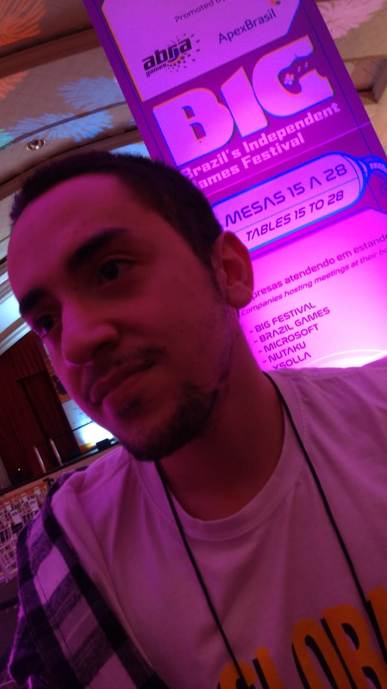

Olá, obrigado pelo interesse em saber um pouquinho mais da minha pessoa. :)
Meu nome é Marcos Cavalcante de Freitas, tenho 25 anos, comecei a
procurar sobre desenvolvimento de jogos desde 2015 / 2016, apesar de
sempre pensar nisso quando questionado o que gostaria de fazer. Lembro
de quando era mais novo e criava personagens e regras de alguns jogos
para jogar com os primos etc. Também tive uma breve experiência com
criação de jogos em 2014 na EACH - USP Leste, com grupos de alunos.
Começou como estagiário em programação para jogos (out/2020) e
atualmente se encontra trabalhando como Desenvolvedor de Jogos
Júnior, mas seu grande sonho de carreira é se tornar um game
designer referência no País (e quem sabe no mundo, não é mesmo? rs).
Os jogos favoritos incluem: Minecraft, Terraria, Stardew Valley,
Slime Rancher e Pokémon (Emerald é o seu favorito), todos sandbox
ou então que possuem alguma interação com criaturas, algo que
encanta os olhos de Marcos.
